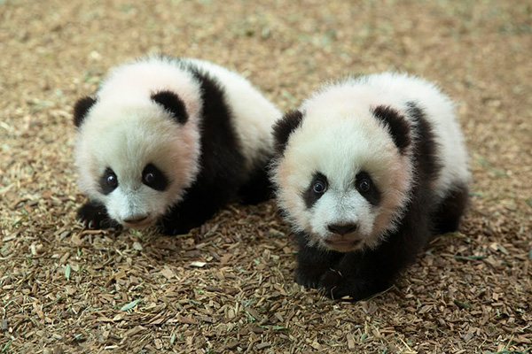

Reproduction
Giant pandas reach breeding maturity when they are between four and eight years of age.They can reproduce until they reach the age of (approximately) twenty. Female pandas can only become pregnant once a for roughly two to three days. Panda's have mating calls
that draw males and females together. Females give birth between 95 and 160 days after mating. Sometimes female pandas give birth to two cubs but normally only one survives.Giant panda cubs normally stay with their mother until they are three years old, this means a wild female (at best) can produce young every other year. In her lifetime she may only successfully raise five to eight cubs. Because giant pandas' have such a slow breeding rate it makes it
extremely difficult to recover from illegal hunting and habitat loss.
 At birth, the cub is helpless, and it takes considerable effort on the mother’s part to raise it. A newborn cub weighs three to five ounces and is about the size of a stick of butter. Pink, hairless, and blind, the cub is 1/900th the size of its mother. Except for a marsupial (such as the kangaroo or opossum), a giant panda baby is the smallest mammal newborn relative to its mother's size. Cubs do not open their eyes until they are six to eight weeks of age and are not mobile until three months. A cub may nurse for eight to nine months. A cub is nutritionally weaned at one year, but not socially weaned for up to two years.